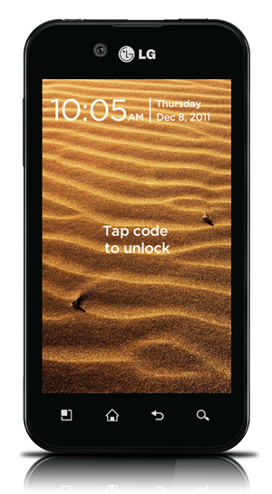
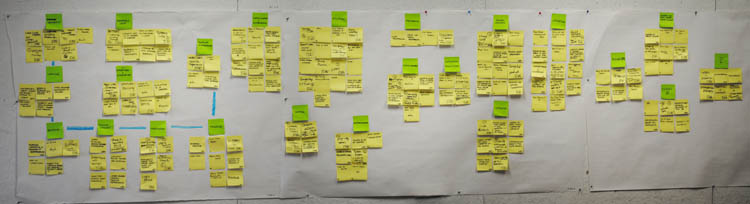
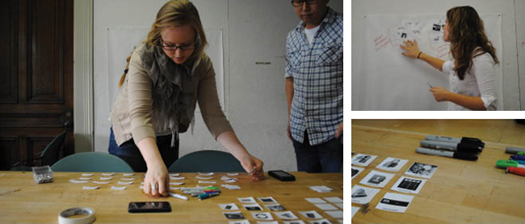
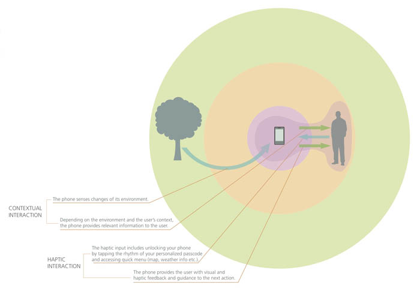
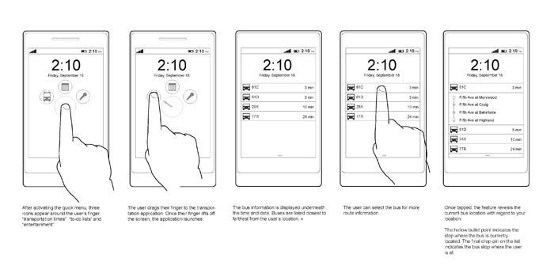
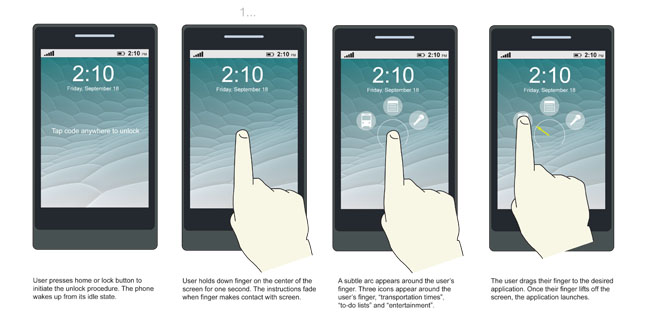
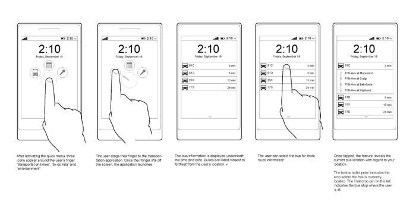
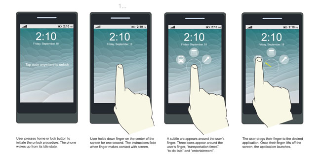

ZENE LG SMARTPHONE
Interaction Design - Sponsored Project (Fall 2011)
This project is the outcome of the semester-long studio project course Prototyping Tools for User Experience (UX) Design. LG Electronics was the industry sponsor for the project. Working with Kaleem Rahman and Chongho Lee, the team’s task was to use previous LG summer research, generate its own findings, synthesize themes and translate them into design concepts for the smartphone UX. At the end of the project the team gave a presentation outlining the research process and demonstrating the final concept. The presentation was recorded and sent to LG along with a formal documentation booklet of the project.
Download the final documentation
Personal Contributions
Interface design, hand-sketching, lo-fi and hi-fi wireframe execution, final renderings, final documentation design. All team members actively participated throughout the entire research, synthesis and concept ideation process.
The Concept
The phone’s core principle is to use a
combination of sensors to understand where the user is and enable easy and quick access to relevant information. At any time, the user can check out information most relevant to the location at the time through the lock screen. To access applications, the user can easily unlock the phone by tapping in a secret pattern. The benefit is that the user can unlock the phone without needing to see the phone screen. The user simply presses the home button and taps in the pattern.
Research
The team conducted extensive research was conducted over a span of 6 weeks to inform the design process that followed. Research methods included interviews, make tools sessions, literature review and competitive analysis. After conducting this research, the findings were synthesized using affinity diagrams and contextual models.
Make tools were designed to allow users to express their emotions towards the phone and their wishes for it.
Six participants created collages depicting how they felt about different aspects of their phone.
Design Phase
After synthesizing and analyzing the findings from the research phase we moved into a six week design phase. We developed three feature concepts working from ideation, sketching, wireframes to hi-fi renderings. Interactive slideshows were also developed to further demonstrate the concepts.
 



Back to Top